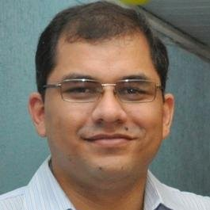
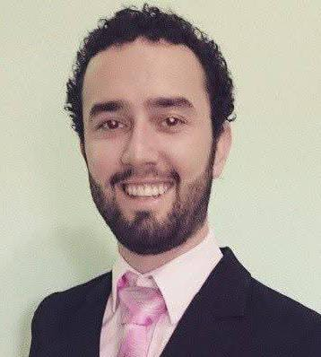
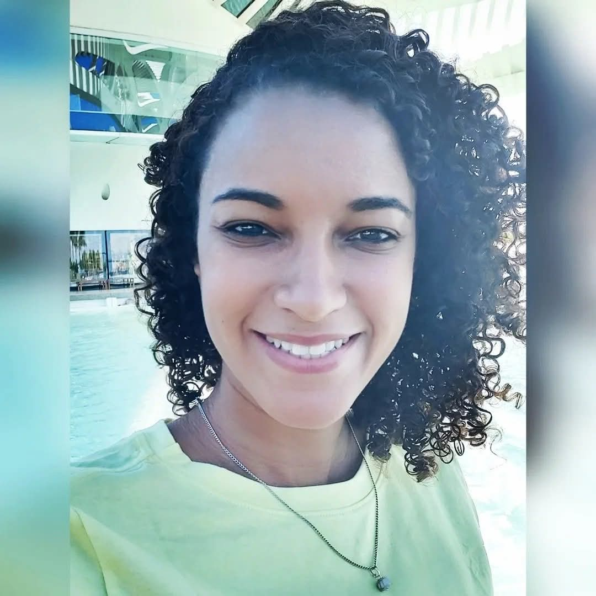

| Foto | Nome | Titulação |
|---|
|
| Anderson de Oliveira Vallejo |
Mestrado em Educação
2013 – 2015
Universidade Estácio de Sá
Título: A Produção do Livro Digital Para a Educação: Mapeando as Noções Pedagógicas Circulantes nos Bastidores,Ano de Obtenção: 2015
Stella Maria Peixoto de Azevedo Pedrosa.
Especialização em Engenharia de Sistemas de Computação
2000 – 2001
Universidade Federal do Rio de Janeiro
Graduação em Tecnológo Em Processamento de Dados
1994 – 1997
Faculdades Integradas Hélio Alonso
Formação complementar
2006 – 2006
Curso de Java. (Carga horária: 120h). , Instituto Infnet do Rio de Janeiro, INFNET, Brasil.
|
| 
| Edilson da Silva |
Mestrado em Telecomunicações
2005 - 2008
Universidade Federal Fluminense
Título: Simulador WDM para análise das penalidades impostas por mistura de quatro ondas (FWM) em fibras ópticas monomodo SMF, DSF e NZDSF,Ano de Obtenção: 2008
Paula Brandão Harboe.Bolsista do(a): Coordenação de Aperfeiçoamento de Pessoal de Nível Superior, CAPES, Brasil. Palavras-chave: Efeitos não-lineares; Telecomunicações; Fibras Ópticas; Simulação.Grande área: EngenhariasSetores de atividade: Desenvolvimento de Programas (Software).
Especialização em Análise de Sist., Desenv. Ger. e Projeto de Sistem
1997 - 1998
Faculdade de Informática de Lins
Título: Desenvolvimento de Software usando Análise Essencial
Orientador: Antônio Francisco do Prado
Graduação em Tecnólogo em Processamento de Dados
1994 - 1996
Faculdade de Tecnologia da Alta Noroeste
Formação complementar
2013 - 2013
Red Hat System Administration III. (Carga horária: 32h). , Red Hat, RED HAT, Brasil.
2013 - 2013
Red Hat System Administration II. (Carga horária: 32h). , Red Hat, RED HAT, Brasil.
2013 - 2013
Furukawa Data Cabling System. (Carga horária: 32h). , Serviço Nacional de Aprendizagem Comercial RJ, SENAC ARRJ, Brasil.
2013 - 2013
Red Hat System Administration I. (Carga horária: 40h). , Red Hat, RED HAT, Brasil.
2008 - 2008
Oficina de Arquivamento Digital Linguístico. (Carga horária: 60h). , Museu Paraense Emílio Goeldi, MPEG, Brasil.
2007 - 2007
Design e tecn.: possibilidades, desafios e mercado. (Carga horária: 2h). , Instituto Infnet do Rio de Janeiro, INFNET, Brasil.
2007 - 2007
VOIP. (Carga horária: 2h). , Instituto Infnet do Rio de Janeiro, INFNET, Brasil.
2006 - 2006
Segurança da Informação - Resposta a incidentes. (Carga horária: 40h). , Rede Nacional de Ensino e Pesquisa, RNP, Brasil.
2000 - 2000
Qualidade de Cursos de Grad. da área de Computação. (Carga horária: 16h). , Sociedade Brasileira de Computação, SBC, Brasil.
2000 - 2000
Linux - Servidor Internet. (Carga horária: 16h). , VSP Training Center, VSP, Brasil.
1999 - 1999
Extensão universitária em Capacitação em Linux. (Carga horária: 60h). , Universidade do Estado de Mato Grosso, UNEMAT, Brasil.
1997 - 1997
Extensão universitária em JAVA. (Carga horária: 20h). , Fundação Paulista de Tecnologia e Educação, FPTE, Brasil.
|
| 
| Guidson Coelho de Andrade |
Mestrado em Ciência da Computação
2016 - 2018
Universidade Federal de Viçosa
Título: Semantic enrichment of American English Corpora through automatic semantic annotation based on top-level ontologies using the CRF classification model,Ano de Obtenção: 2018
Alcione de Paiva Oliveira.Coorientador: Alexandra Moreira. Bolsista do(a): Coordenação de Aperfeiçoamento de Pessoal de Nível Superior, CAPES, Brasil. Palavras-chave: Anotação Semântica; Ontologias de Nível Topo; Anotação Híbrida; Anotação Automática; Conditional Random Fields.Grande área: Ciências Exatas e da Terra
Graduação em Licenciatura em Computação
2020 - 2021
Claretiano Centro Universitário, Claretiano/BAT
Graduação em Bacharelado em Sistemas de Informação
2010 - 2015
Instituto Federal Minas Gerais
Título: O uso da tecnologia assistiva para deficientes visuais a luz de um comparativo teórico da legislação brasileira e norte-americana de educação especial
Orientador: Ma. Cláudia Marisa Ferreira Machado Pimenta
com Bolsista do(a): Coordenação de Aperfeiçoamento de Pessoal de Nível Superior, CAPES, Brasil.
Ensino Médio (2º grau)
2007 - 2009
Escola Estadual Nossa Senhora do Patrocínio
Formação complementar
2018 - 2018
CAPACITAÇÃO DE TUTORES PARA EAD. (Carga horária: 50h). , Universidade Federal de Viçosa, UFV, Brasil.
2013 - 2014
Extensão universitária em Programa Intensivo de Ingles. , Western Illinois University, WIU, Estados Unidos.
2013 - 2013
Programação em C#. (Carga horária: 60h). , Instituto Federal Minas Gerais, IFMG, Brasil.
2012 - 2012
Programação Android. (Carga horária: 12h). , Instituto Federal Minas Gerais, IFMG, Brasil.
2011 - 2011
Extensão universitária em Projeto Rondon - Operação Oiapoque - Amapá. (Carga horária: 160h). , Ministério da Defesa, MD, Brasil.
2011 - 2011
Implementação de Tipos Abstratos de Dados em C++. (Carga horária: 15h). , Diretório Acadêmico do Curso de Sistemas de Informação, DASI, Brasil.
2010 - 2010
Configuração e Montagem de Rede Doméstica. (Carga horária: 4h). , Instituto Federal Minas Gerais, IFMG, Brasil.
2006 - 2006
Introdução à Micro Informática. (Carga horária: 64h). , Giga Byte Informática, GBI, Brasil.
|
| 
| Joyce Miranda dos Santos |
Doutorado em Informática
2013 – 2016
Universidade Federal do Amazonas
Título: DESCRITORES DE IMAGENS BASEADOS EM ASSINATURA TEXTUAL
, Ano de obtenção: 2016. Prof. Dr. Edleno Silva de Moura.
Mestrado em Informática
2011 – 2013
Universidade Federal do Amazonas
Título: RE-RANKING DE BUSCA VISUAL DE PRODUTOS USANDO INFORMAÇÃO MULTIMODAL, Ano de Obtenção: 2013
Prof. Dr. Joao Marcos Bastos Cavalcanti.Palavras-chave: Busca visual de produtos; Re-ranking de imagens; Comércio eletrônico; CBIR.Grande área: Ciências Sociais Aplicadas
Especialização em GOVERNANÇA EM TECNOLOGIA DA INFORMAÇÃO
2009 – 2011
Serviço Nacional de Aprendizagem Comercial – RJ
Título: DEFINIÇÃO DE UM PROCESSO DE AQUISIÇÃO DE SOFTWARE
Orientador: Prof. Msc Alexandre Domingues Gonçalves, Msc.
Especialização em DESENVOLVIMENTO DE SOFTWARE PARA WEB
2006 – 2008
Instituto Federal de Educação, Ciência e Tecnologia do Amazonas
Título: Geração Automática do Cronograma de Projeto de Software a partir da Especificação de Requisitos
Orientador: Prof. Msc Erik Alexander Landim Rafael
Graduação em Sistemas de Informação
2006 – 2008
Universidade Luterana do Brasil
Título: SISTEMA DE APOIO À INSPEÇÃO DE DOCUMENTOS DE ESPECIFICAÇÃO DE REQUISITOS DE SOFTWARE (SAID-ERS)
Graduação em TECNOLOGIA EM DESENVOLVIMENTO DE SOFTWARE
2002 – 2006
Instituto Federal de Educação, Ciência e Tecnologia do Amazonas
Título: Sistema de Gestão de Bolsas Acadêmicas com Fundamentos de Tecnologia GED (Gerência Eletrônica de Documentos)
Orientador: Prof. Marcelo Chamy Machado, Esp.
Formação complementar
2019 – 2019
SCRUM NA PRÁTICA. (Carga horária: 16h). , Fundação Desembargador Paulo do Anjos Feitoza, FPF, Brasil.
|